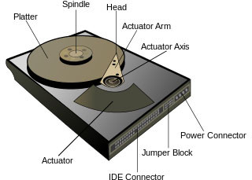
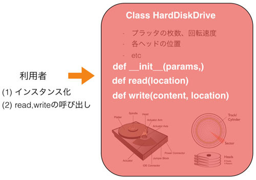
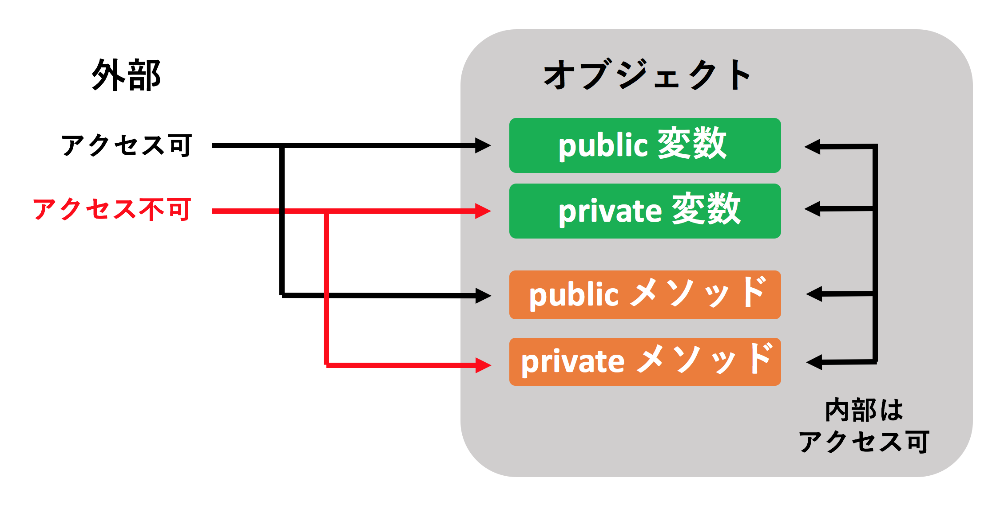

情報の隠蔽
本記事の内容
概要
クラスを使ったプログラミングではデータ(インスタンス変数)と処理(メソッド)が強く結びついています。 そのため、決められた使い方以外をされるリスクが「構造体と関数の組み合わせ」より大幅に減ります。 これは構造体と関数を使う場合はプログラマが自分たちでルールを作ってデータと処理の結びつきを作る必要があるのに対し、 クラスを使った場合はそれが強制されるからでした。 本章ではこのオブジェクト指向の特性をより有効に使う方法を深掘りしたいと思います。 具体的には「オブジェクトの詳細情報を隠す」ことにより、どのようなメリットがあるかという話題について取り扱い、 後半で Python でそれをどう実現するか説明します。
データや処理を隠す
今まで扱ってきた 例では仕組みが簡単すぎて情報の隠蔽のメリットがわかりにくいので、 もう少し複雑なハードディスクへの読み書き処理を例にしてみます。 すでにご存知の方もいるとは思いますが、ハードディスクは大まかに以下のような構造となっています。

おそらく誰しもが見たことがある金属製のケースの中には、プラッタと呼ばれている磁気ディスクが何枚も入っており、 その磁気ディスクにアームでデータを読み書きします。 各ディスクにはトラックやシリンダーで管理される番地が振られていて、 一つひとつの番地の記憶要領は少ないものの「番地A - 番地D」といった形で複数の番地にデータを分散させることで、 大きなデータを保存することができています。 ただ、ハードディスクの物理番地は、ひとつのファイルであっても連続しているという保証はなく、 飛び飛びになっている場合があります。
簡単にハードディスクの構造について話しましたが、ようするにその仕組が複雑であるということがわかっていただけたでしょうか。 普通のユーザがハードディスクにデータを書き込む際はこのような内部の詳細について知る必要はなく、 あくまでも「ファイルAをロケーションBに書き込む」ということだけができれば十分です。 具体的にハードディスクが何枚のプラッタから構成されていて、どの物理番地に何が書かれているかということは、 ユーザが知る必要はありません。
このようなシナリオでは「実装の隠蔽」が重要な意味を持ちます。 先の例でもし実装が隠蔽されていない場合、ハードディスクの構造を理解していないとユーザはデータを保存したり読みだしたりすることができません。 そのような面倒な処理は嫌かと思います。 実装がうまいこと隠蔽されていると、ハードディスクの構造を意識することなくユーザはデータを「簡単」に保存することができます。
このハードディスクの概念を実装しようとした際に、よい実装と悪い実装が考えられます。 まずは悪い実装です。
- コンストラクタ: プラッタ枚数とディスクあたりのトラック数とサイズ
- read 何枚目のディスクのどのセクタを読み込むかを指定してデータを得る
- write 何枚目のディスクのどのセクタに書き込むか、書き込むデータを指定してデータを書き込む
一方、これを単純化した実装は以下となります。
- コンストラクタ: 悪い例と同じ
- read: ハードディスク全体のうちのどの位置かを指定してデータを得る
- write: ハードディスク全体のうちのどの位置、書き込むを指定してデータを書き込む
両者の違いはどこにあるかというと利用者に「ハードウェアの詳細をどれほど見せるか」という点にあります。 利用者としてはデータの読み書きさえできれば構わないので内部のプラッタの詳細などどうでもいい話なのです。 悪い例では読み込み書き込みをするにもいちいちハードウェアの細かい話を考慮する必要があり、メソッドの呼び出しも煩雑となります。 一方、良い例では読み書きメソッドはハードディスクの内部の作りを全く意識しないものとなっています。 コンストラクタもデフォルト引数などを使って簡略化してもいいかもしれません。 ただ、簡略化した場合でも細かい設定を調整できる余地は残すべきです。このあたりの話は前書で扱っています。
内部は複雑であっても、利用者に対するインタフェース(メソッド)は可能な限り単純にする。 これが「情報の隠蔽」で意識することです。 たとえば以下のようにハードディスクのクラスは、コンストラクタと読み書きのメソッドのみをユーザに使ってもらえば、 ユーザは細かい内部の仕組みを気にせずに読み書き処理が可能です。

実際のところ、この実装の隠蔽はオブジェクト指向だけにある特徴ではなく、 Cのような手続き型でもモジュール化やネーミングの規則などによって実現可能です。 ただ、何度も説明しているようにオブジェクト指向はデータと処理が適切に結びついているため、 手続き型に比べると隠蔽を手伝ってくれる文法がリッチだといえます。 つまり、手続き型で詳細を隠蔽することは、オブジェクト指向で同じことを実現するよりも難しいと言えます。 オブジェクト指向がカバーしている隠蔽のための文法を「いろいろなプログラミングのルール」を自分たちで決めることでコードがカオスになることを防ぎます。 なお、オブジェクト指向であっても間違った設計をすれば実装は隠蔽できまんので注意して下さい。 オブジェクト指向初心者のうちは「誰が何をするべきか」「何を外に見せて、何を隠すか」ということに注意を払って設計することをオススメします。 そういうことを繰り返していると自然とオブジェクト指向的な考えが身につくと思います。
ちなみにこのハードディスクの例は説明しやすいように用意したものであり、 実際は ファイルシステムが絡んだりしてもっと複雑です。 そもそもハードディスクのコントローラのプログラムはC言語や アセンブリで作られているはずです。
プライベートなインスタンス変数とメソッド
先ほど説明したようにオブジェクトは外部からアクセスされるべき箇所以外は隠すべきです。
Python はクラスのインスタンス変数とメソッドを「外に公開するもの」と「内部だけで利用するもの(外に公開しない)」のどちらかに設定することでこれを実現できます。
結論から言いますと、アンダーバー2つで囲われたもの(
__init__
など)を除いて、
インスタンス変数やメソッドがアンダーバー「
_
」で始まるものは外に公開していないという意思表示になります。
他の人が作ったクラスであった場合はそれらへのアクセスは避けるべきですし、自分が触ってほしくないと思う箇所も
_
から始めるべきです。
ただ、アンダーバーが1つだけであれば特に文法的に何も変化しないため外からアクセスできますが、
名前の前にアンダーバー2つ「
__
」をつけるとその要素は外に公開されなくなります。
__init__
のような名前の最初と最後にアンダーバー2つをつけたものは特殊属性と呼ばれているものなので決められたもの以外は使ってはいけません。
特殊属性ついては後述しますのでしばらく忘れて下さい。
実際にコードで確認してみます。テスト用のクラスを以下に記載します。
class TestPrivate: def __init__(self): self.var1 = 'var1' self.__var2 = 'var2' # PRIVATE def method1(self): print('method1') def __method2(self): # PRIVATE print('method2') def method3(self): print(self.var1) print(self.__var2) self.method1() self.__method2()
まずはコンストラクタ内で定義されたインスタンス変数のチェックです。
コードを見てもらうと分かりますが、ひとつめが var1 で2つめが
__var2
です。
先ほど言ったように
__var2
は変数名の先頭にアンダーバーが2つあるので外に公開されていません。
続いてメソッドです。
method1
は通常のメソッドで、
__method2
はプライベートなメソッドとなります。
method3
は通常のメソッドですが、その内部でプライベートなインスタンス変数やメソッドにもアクセスしています。
まず、インスタンス変数へのアクセスを試してみます。
instance = TestPrivate() print(instance.var1) print(instance.__var2)
これを実行すると以下のようにvar1にはアクセスできるものの、
__var2
へのアクセスでエラーが発生します。
var1
Traceback (most recent call last):
File "/Users/yuichi/Desktop/test3.py", line 20, in <module>
print(instance.__var2)
AttributeError: 'TestPrivate' object has no attribute '__var2'
エラーを見てもらうと分かりますが「
__var2
という属性は TestPrivate のオブジェクトにはない」と言われています。
外部に公開していないインスタンス変数にアクセスしてエラーとなったので、期待通りの挙動といえます。
ただ、注意してほしいのは
__var2
への代入は「インスタンス変数とは別物」としてできてしまうということです。
たとえば以下のコードはエラーとなりません。
instance = TestPrivate() instance.__var2 = 'VAR2 VAR2'
これは実は動的なオブジェクトで説明した挙動にもとづいており、
代入する際にインスタンス変数
__var2
が作られているだけです。
このとき、クラス内で定義されているインスタンス変数
__var2
には何も影響がありません。
両者は別物だからです。
続いてメソッドも利用してみましょう。
instance = TestPrivate() instance.method1() instance.__method2()
これを実行すると以下のようになります。
method1
Traceback (most recent call last):
File "/Users/yuichi/Desktop/test3.py", line 20, in <module>
instance.__method2()
AttributeError: 'TestPrivate' object has no attribute '__method2'
これも先ほどのインスタンス変数と同じく、プライベートなメソッド
__method2
へのアクセスはエラーとなりました。
最後にメソッド内部でプライベートなインスタンス変数やメソッドにアクセスする method3 を呼び出してみます。
instance.method3() # var1 # var2 # method1 # method2
結果を見て分かるようにプライベートなインスタンス変数やメソッドにも、 オブジェクトのメソッド内からは問題なくアクセスできており、エラーは発生していません。 これは期待される挙動です。 なぜならプライベートなインスタンス変数やメソッドは「外部に対してプライベート」なだけであり、 今回の method3 のような「内部からのアクセス」はできるためです。
要約をすると、以下のように設定をすれば問題ありません。
- 外からアクセスされたくないインスタンス変数やメソッドの名前は __ から始める
- 外に公開するものは普通に名前をつける
基本的にはこれさえ守れば問題ありません。
このアクセス制御の仕組みを図にまとめてみます。

ちなみにプライベートなインスタンス変数やメソッドもトリッキーな方法を使えばアクセス可能です。
instance = TestPrivate() print(dir(instance)) # ['_TestPrivate__method2', '_TestPrivate__var2', # '__class__', '__delattr__', '__dict__', '__dir__', # '__doc__', '__eq__', '__format__', '__ge__', # '__getattribute__', '__gt__', '__hash__', '__init__', # '__le__', '__lt__', '__module__', '__ne__', '__new__', # '__reduce__', '__reduce_ex__', '__repr__', # '__setattr__', '__sizeof__', '__str__', # '__subclasshook__', '__weakref__', 'method1', # 'method3', 'var1'] print(instance._TestPrivate__var2) # var2 instance._TestPrivate__var2 = 'Hello' instance.method3() # var1 # Hello # method1 # method2
dir関数を使ってインスタンスの属性一覧を列挙すると、プライベートなインスタンス変数とメソッドらしきものが
「
_TestPrivate__method2
」や「
_TestPrivate__var2
」といった形で存在します。
詳細は割愛しますが、この名前の変更は「マングリング」と呼ばれる処理がされた結果です。
このマングリングされた名前にアクセスするとプライベートな属性にアクセスできたり変更できたりします。
上記コードでは外部に公開していない
__var2
が操作されていることが分かります。
Python のプライベートな属性は単に内部的に名前を変更してインスタンスに登録されているだけなのでこのようなことができます。
もちろんですがこのようなことはやらないで下さい。
なお、先ほど
instance.__var2
で代入をした例で「クラス内で定義されている
__var2
には影響がない」と言いましたが、
これはこのマングリングによる名前変換の影響です。
外からアクセスする
__var2
と内部で定義されている
__var2
は完全に別物になります。
注意して下さい。
何を見せ、何を隠すべきか オブジェクト指向におけるデータの隠蔽にはいわゆるベストプラクティスというものが存在しているので紹介します。
- インスタンス変数は全て外に出さない
- 外部から操作する必要のあるインスタンス変数は set, get メソッドを用意する。このようなメソッドは「セッターメソッド」、「ゲッターメソッド」と呼ばれる
- パブリックメソッドはシンプルに保ち、こみいった処理は分割してプライベートメソッドに実装する
これらはオブジェクト指向のルールを厳守する場合の例です。 メソッドの分割に関しては特に説明不要かと思いますが、set, get はサンプルをお見せします。
class MyClass: def __init__(self, a, b): # 外から使うため set, get メソッドを用意 self.__a = a # 中だけで使う self.__b = b def set_a(self, a): self.__a = a def get_a(self): return self.__a
上記においてインスタンス変数
__a
は外から操作する必要があるもので、
__b
は完全に内部の変数だとします。
その際、
__a
の値を設定するメソッド
set_a
と取得するメソッド
get_a
が実装されています。
__b
については外から触る必要がないのでそれらは用意されていません。
このようなことをせずインスタンス変数
__a
のみ変数
a
として直接外に見せることも可能です。
ただ、セッターゲッターメソッドを提供することで「set される値が期待されるものかチェックができる」
「返す値が期待されなければ例外を発生させられる」といった使い方ができます。
高度になるため下編にて取り扱いますが、デコレーターと呼ばれるテクニックで上記を実現する方法もあります。
なお、セッターやゲッターはあくまでも厳密にオブジェクト指向を守る場合に使います。 厳格に守ることによってPython らしい簡潔なコードのメリットが弱くなってしまうので、 どこまでルールを順守するかは議論が分かれるところかもしれません。 私は使い捨てのコードでは全く隠蔽をしませんが、そこそこ大きなプログラムを書く場合はかなり厳格に隠蔽のルールを守るようにしています。
なお、プライベートなインスタンス変数やメソッドを使うとコードが長くなるため、 今後の章ではそれほど積極的には隠蔽は行いません。
 印刷する
印刷する